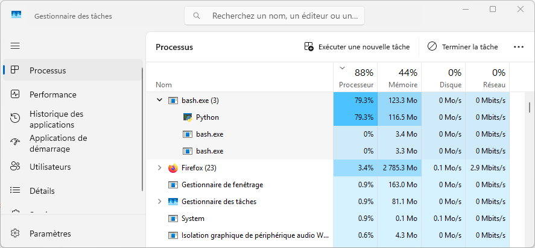

Memory#
L’analyse des besoins en mémoire vive est similaire à celle pour les besoins en temps, excepté que les métriques sont différentes.
Pour rappel, voici les deux principales options de l’ordonnanceur Slurm pour demander de la mémoire :
--mem=<quantité>, quantité de mémoire par noeud de calcul.--mem-per-cpu=<quantité>, quantité de mémoire par coeur CPU.Par défaut :
256M
Pourquoi se fixer une limite de mémoire?#
Dans les grappes nationales, la grande majorité des noeuds de calcul contiennent un peu moins de 4G de mémoire vive utilisable par coeur CPU.
Une poignée de noeuds ont entre 16G et 32G par coeur, ce qui en fait une ressource très limitée et peut causer un plus long temps d’attente pour y accéder.
Pour protéger le noeud de calcul de votre programme dans le cas d’une surutilisation de mémoire.
Enfin, pour remplacer la valeur par défaut de 256M par coeur CPU.
En somme, il est nécessaire de spécifier une quantité de mémoire, avec bien sûr une certaine marge de sécurité (par exemple, ajouter 20% sur la quantité prévue).
Déterminer le besoin en mémoire à partir de votre ordinateur#
En utilisant le gestionnaire de tâches (sur Windows), le moniteur d’activité
(sur Mac OS) ou la commande top, vous pouvez déjà voir la consommation en
mémoire de votre programme. À données égales, la consommation en mémoire
devrait être très similaire sur la grappe de calcul.

Note
Avec top et htop, c’est la colonne RES qu’il faut regarder. Il
s’agit de la quantité de mémoire occupée ou résidente par le processus.
Obtenir la quantité de mémoire utilisée sur la grappe#
Avec l’identifiant d’une tâche terminée, on peut utiliser la commande
seff <jobid> ou encore
sacct -j <jobid> -o JobID,JobName,MaxRSS.
Memory Utilized: quantité mesurée maximale de mémoire utilisée.MaxRSS: même chose. “RSS” veut dire Resident set size.Voir la documentation ici.
Exercice#
Affichez la liste des dernières tâches avec
sacct -X -o JobID,JobName.Essayez la commande
seff <jobid>pour la tâche ayant testé les deux programmes de tri. Quelle est la quantité maximale de mémoire utilisée?Voyez aussi cette quantité avec la commande
sacct -j <jobid> -o JobID,JobName,MaxRSS.
Estimer la mémoire requise pour un plus grand calcul#
Voici quelques facteurs à considérer pour caractériser l’utilisation de la mémoire :
Le nombre de fichiers à traiter en simultané.
La taille moyenne des fichiers en entrée.
Si les données sont stockées avec de la compression, il faut considérer un certain facteur de décompression.
Les paramètres du programme et donc de l’algorithme.
Les données qui seront ensuite générées en mémoire.
En faisant varier l’un ou l’autre de ces facteurs, et ce, en prévision d’un très grand calcul, il devient possible de voir la tendance d’utilisation de la mémoire. Quelques détails à considérer :
La mesure sur la grappe doit se faire une tâche à la fois.
Pour que la mesure soit fiable, il faut que l’utilisation maximale soit maintenue pendant environ 30 secondes.
Autrement, il faudra utiliser des techniques de suivi des tâches en temps réel.
Exercice#
Objectif : dans cet exercice, nous allons provoquer une surutilisation de mémoire :
Allez dans le répertoire de l’exercice avec
cd ~/cq-formation-cip201-main/lab/sort.Au besoin, recompilez les programmes
bubbleetquickavec la commandemake.Éditez le fichier
test.shde sorte à configurer--mem=400M(seulement 400 mébioctets).Soumettez une tâche avec le script
test.sh.Une fois le calcul terminé :
Voir le message d’erreur dans le fichier
slurm-<jobid>.out.Voir l’état (State)
OUT_OF_MEMORYdans la sortie desacct -j <jobid>